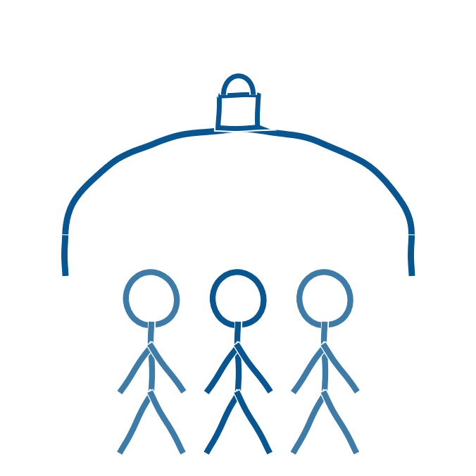

Anbefaling 1 og 2 fra ministeriet er entydige. Skolen skal formulere en fælles retning og tydelige rammer for brugen af generativ AI, og de løsninger, der bruges, skal overholde gældende regler for databeskyttelse (Børne- og Undervisningsministeriet, 2025). Uden fælles rammer opstår der let usikkerhed hos både lærere og elever om, hvad der egentlig er tilladt.
Aabenraa Kommune har allerede et lokalt fundament at bygge videre på. Det gælder den kommunale vejledning AI i klasselokalet (Conrath m.fl., 2026) og strategien IT og digitalisering i Folkeskolen (Aabenraa Kommune).
AI i klasselokalet er udviklet over tid og skal ikke forstås som et afsluttet produkt. Den er resultatet af et tværfagligt arbejde, der tog form i takt med, at kunstig intelligens fik større betydning i skolen. Siden den første udgave er vejledningen løbende blevet justeret på baggrund af nye erfaringer, behov og teknologiske udviklinger og foreligger nu i sin tredje udgave. Den fungerer dermed som et levende dokument, der fortsat tilpasses i takt med udviklingen på området (Conrath, 2026).
Ministeriets vejledning om lovlig brug af kunstig intelligens for uddannelsesinstitutioner (Styrelsen for It og Læring, 2025) og den tilhørende AI-miniguide (Styrelsen for It og Læring, 2026) udgør de generelle, juridiske rammer, som de lokale dokumenter skal spille sammen med.
Ministeriet fremhæver endelig, at forældrene skal orienteres om skolens tilgang til generativ AI, jævnfør anbefaling 7 (Børne- og Undervisningsministeriet, 2025). Rammerne skal altså ikke kun findes internt. De skal også kommunikeres udadtil.
Ansvaret for at få generativ AI til at fungere lovligt og meningsfuldt er fordelt på flere niveauer. Ministeriet skal sætte den overordnede retning og udstikke rammer, samtidig med at der er plads til lokal afprøvning. Kommunen skal omsætte de nationale retningslinjer til lokal praksis, tilbyde efteruddannelse og pege på værktøjer, der overholder databeskyttelsesreglerne. Skolen skal skabe rum for fælles drøftelser af muligheder og risici, formulere lokale retningslinjer og holde en åben dialog med forældre og elever. Læreren skal besidde den tekniske og didaktiske dømmekraft til at bruge AI meningsfuldt og til at lære eleverne kritisk tænkning om teknologien (von Sehested, 2024).
- Aabenraa Kommune. IT og digitalisering i Folkeskolen. https://pucaabenraa.dk/media/suykwmi3/it-og-digitalisering-i-folkeskolen_0.pdf
- Børne- og Undervisningsministeriet (2025). Anbefalinger om brug af generativ AI i undervisningen i folkeskolen. Styrelsen for Undervisning og Kvalitet. https://uvm.dk/aktuelt/nyheder/2025/juni/250626-offentliggoerelse-af-anbefalinger-om-brug-af-generativ-ai-i-undervisningen-i-folkeskolen/
- Conrath, M. (2026). AI i skolen: Aabenraa Kommunes rejse med generativ AI i undervisningen. Oplæg på Sorø-mødet, 6.-7. august 2026.
- Conrath, M. (red.), Matthiesen, A., Markussen, B. H., Conradsen, H., Gammelgaard, J., & Therkelsen, M. J. (2026). AI i klasselokalet: Anbefalinger for udnyttelse af generativ kunstig intelligens i undervisningen (3. udgave). Pædagogisk UdviklingsCenter Aabenraa.
- Styrelsen for It og Læring (2025). Vejledning om lovlig brug af kunstig intelligens for uddannelsesinstitutionerne. https://stil.dk/media/euwhigzs/250526-vejledning-om-lovlig-brug-af-kunstig-intelligens-for-uddannelsesinstitutionerne.pdf
- Styrelsen for It og Læring (2026). AI-miniguide (tillæg til vejledning om lovlig brug af kunstig intelligens). https://uvm.dk/media/tdgagnhj/260106-ai-miniguide-tillaeg-til-vejledning-om-lovlig-brug-af-kunstig-intelligens-final.pdf
- von Sehested, M. (2024). Hvem skal tage ansvaret? viden.ai. https://viden.ai/hvem-skal-tage-ansvaret/